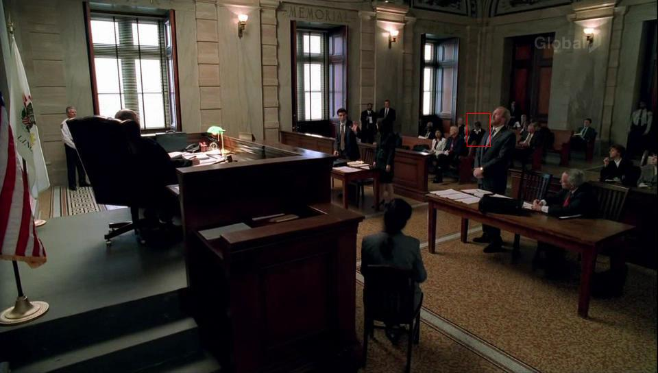

Prison Break Update - Episode 14

You may have spotted Carol in Monday's Prison Break (3/21, episode 14, 15:35 into the episode), if you get FOX in HD (16:9 Wide-screen-- I do not think she was visible in the standard 4:3 version). In this scene where Nick and Veronica are trying to convince Nick's law school buddy to get them a hearing, you can catch a glimpse of Carol for .83 seconds. See the shot above, far left of the screen. What a performance!
UPDATE: Exhumation Order? See the video clip by below. Don't blink!
** (Hint: look at the very left of the screen at the very end of the clip.)
But wait-- there's more! Later, (25:28 into the episode) in the courtroom where Nick and Veronica are making their appeal... Who's that blur? You be the judge...

(click on the picture to see a larger version, with Carol's blob highlighted)
Originally published on the Blogspot site